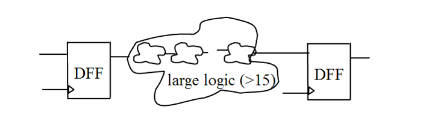

| Description | This rule fires when Leda detects two flip-flops with a number of logical levels between them that exceeds the specified maximum. Limiting the number of logic levels between flip-flops improves synthesis performance and avoids timing problems in combinatorial logic. You can use the rule_set_parameter command and the MAX_LOGIC_LEVEL parameter to set the maximum number of logical levels. The default is 15. For example:
leda> rule_set_parameter -rule NTL_STR24 \
-parameter MAX_LOGIC_LEVEL -value {10}
|
| Policy | DESIGN |
| Ruleset | STRUCTURE |
| Language | VHDL/Verilog |
| Type | Hardware |
| Severity | Error |
This is an example of invalid Verilog code, followed by a circuit diagram that illustrates the problem:
module ntl_str24_top; ... wire Data_0, Data_1, Data_2, Data_3, Data_4, Data_5, Data_6, Data_7, Data_8, Data_9, Data_10, Data_11, Data_12, Data_13, Data_14, Data_15, Data_16; ... //DFF - flip-flop DFF I0(.Clock(Clock), .Din(Din), .Dout(Data_0)); //Logic_1~16 - combination logics Logic_1 I1 (.Din(Data_0), .Dout(Data_1)); Logic_2 I2(.Din(Data_1), .Dout(Data_2)); Logic_3 I3(.Din(Data_2), .Dout(Data_3)); ... Logic_14 I15(.Din(Data_14), .Dout(Data_15)); Logic_16 I16(.Din(Data_15), .Dout(Data_16)); // NTL_STR24 fires -- > 15 logical levels (default) between flip-flops DFF I17(.Clock(Clock), .Din(Data_16), .Dout(Dout)); endmodule